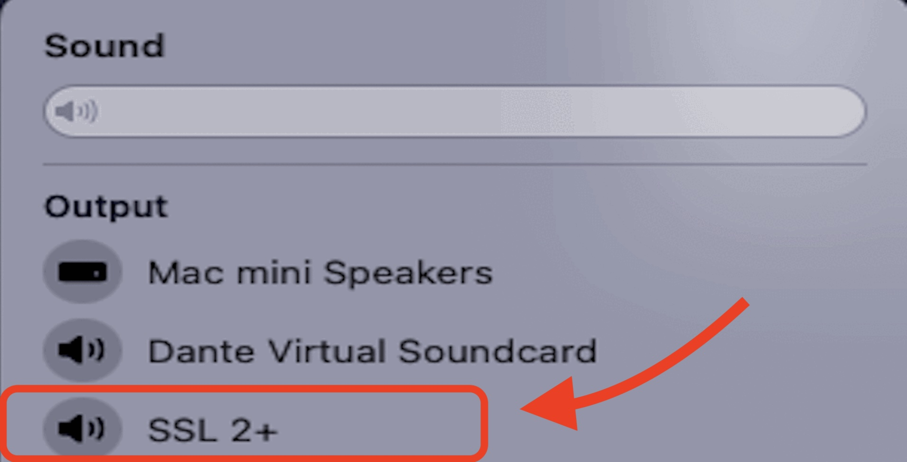
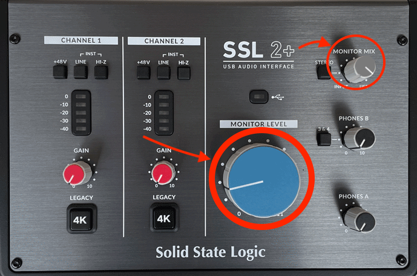

Room 306
Room PC
Locate the rack near the back of the room

On the top of the rack, there is a black box labeled Furman. Flip the red switch up and turn on the power.

Towards the bottom of the rack, on the box labelled "Audio Control", press the button labelled "Cart SSL".

On the remote strapped to the HDMI switcher, press 3, labelled "CART SSL".

On the computer, in the menu bar in the top right corner, ensure that "SSL 2+" is the selected device.
On the back of the cart, locate the SSL 2+ interface. Make sure the MONITOR MIX knob is turned fully to the right, and set the MONITOR LEVEL knob to at least the 9 o'clock position.
Laptop
On top of the rack, there is a black box labeled Furman. Flip the red switch on the right side to the on position.
Towards the bottom of the rack, on the box labelled Audio Control, press the button labelled HDMI Switcher and turn all 4 knobs on the right (bass, treble, balance, and volume) to the middle/vertical position. For the bass and treble knobs, you will feel a click at each notch. Make sure they align with the exact vertical position. For the balance knob, there is a click only at the vertical position. For volume only, roughly in the middle is ok, and adjust as needed.
On the bottom box in the rack, make sure both knobs (labelled left and right) are turned to the middle/vertical position.
On the remote strapped to the HDMI switcher, press 2, labelled LAPTOP.
Plug in either your laptop or your phone to the HDMI adapter attached to the rack.
Turn the volume up or down on your laptop/phone to adjust the monitor level.
External Sound
On the podium, the Audio Control Box, select Mini Plug.
Connect your device to the aux cable attached to the podium.
(If you're using a Macbook) Click on the Control Center icon in the menu bar at the top right corner, under "Sound", ensure that External Headphones is the selected device (the circle to the left will be blue if so, click it if not).
(If you're using a Windows laptop) Click on the Speaker icon in the menu bar at the lower right corner, ensure that the device start with Headphones is the selected device.
Click the Volume up and down buttons on the EXTRON panel on the podium to adjust the volume.
When done, click DISPLAY OFF to shut down the system.
Turn the power off on the Furman Box at the bottom of the podium.